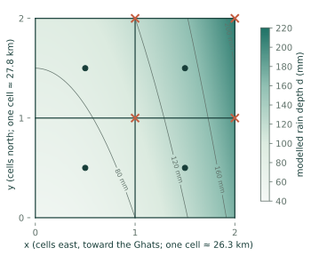
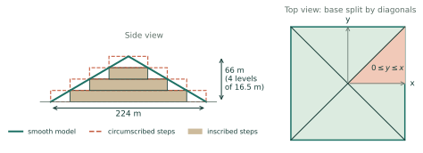
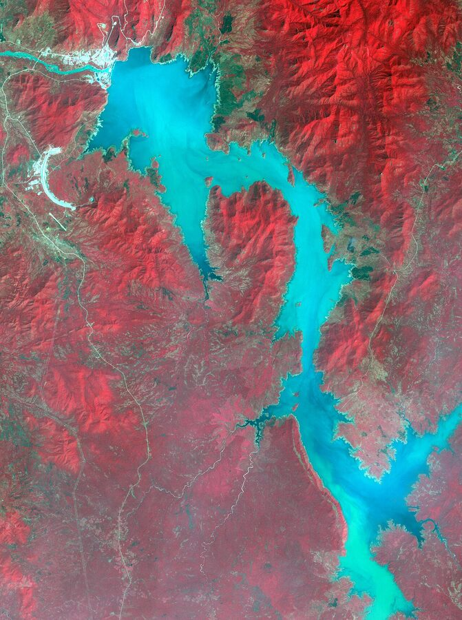
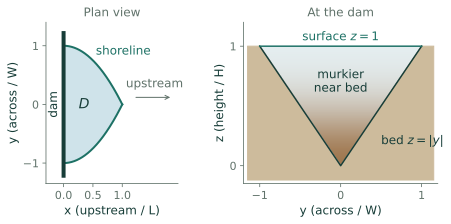
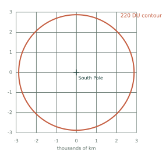

Enter fractions, decimals, pi, e, sqrt(...), sin(...), cos(...), exp(...), or log(...). Use ^ for powers and radians for angles. Vectors and bounds use commas. Decimal answers are checked to two decimal places (answers smaller than 0.1 need two significant digits); exact forms such as 6pi sqrt(37) are always fine. LaTeX such as \frac{1}{2}, \sqrt{2}, \pi, and \phi is also accepted. Equivalent expressions are accepted; potential functions may differ by a constant. Units are provided beside each input.
Hints and solutions are local worked guidance. They do not send messages to an AI service. Your inputs and notes stay in this browser; this is an ungraded practice site.
When monsoon winds from the Arabian Sea hit the Western Ghats, India’s west-coast mountains, they can dump more than 200 mm of rain in a day. To know how much water fell, the India Meteorological Department turns readings from almost 7,000 rain gauges into a grid of 0.25° cells, one rainfall value per cell. Adding up “depth × cell area” is exactly a Riemann sum.
Building the model
1From the real world
IMD grid: \(0.25^\circ\times0.25^\circ\) cells, built from 6955 rain gauges
IMD terms (24-hour rainfall): heavy 64.5–115.5 mm, very heavy 115.6–204.4 mm, extremely heavy ≥ 204.5 mm
A \(2\times2\) block of cells near \(19^\circ\)N on the windward side of the Western Ghats
Each cell has area \(\Delta A\approx27.8\) km \(\times\) 26.3 km \(\approx730\) km2
Rain increases eastward toward the mountains and slightly northward; the formula is a model of one heavy-rain day
3So the model is
Rain depth: \(d(x,y)=50+30x^2+20y\) mm
\(x\) = cells east of the block’s west edge, \(y\) = cells north of its south edge: \(0\le x\le2\), \(0\le y\le2\)
Rain volume \(V=\iint d\,dA\); 1 mm on 1 km2 is 1000 m3

The model: rain depth \(d(x,y)\) (mm) over four IMD cells of about 730 km2 each. Crosses: upper-right sample points; dots: midpoints.
First, on paper
Sketch the \(2\times2\) block of cells with the \(x\)- and \(y\)-axes, and explain where \(\Delta A\approx730\) km2 comes from. Before computing anything, predict whether the upper-right sum will over- or underestimate, using how \(d\) changes in \(x\) and \(y\). Mark the upper-right and midpoint sample points and classify the four midpoint values with IMD’s terms. After part (c), say in one sentence what \(A(x)=\int_0^2 d(x,y)\,dy\) measures (draw it as a cross-section of the solid under the graph of \(d\)), and confirm part (c) by integrating in the other order. Did the midpoint sum over- or underestimate? Explain using the shape of \(d\) in \(x\).
aFind the upper-right Riemann sum for the rain volume over the block, in millions of cubic metres.
A step in the right direction
bFind the midpoint Riemann sum for the rain volume, in millions of cubic metres.
A step in the right direction
cFind the exact rain volume from the model with an iterated integral, in millions of cubic metres.
A step in the right direction
View full solution +
Follow the reasoning
Each cell is \(0.25^\circ\) of latitude, \(0.25\times111.2\approx27.8\) km, by \(0.25^\circ\) of longitude, \(27.8\cos19^\circ\approx26.3\) km, so \(\Delta A\approx730\) km2. Measuring \(x\) and \(y\) in cell widths, one unit square in the \((x,y)\)-plane is one cell, and \(\text{mm}\times\text{km}^2=1000\) m3.
Because \(d=50+30x^2+20y\) increases in both \(x\) and \(y\) on the block, the upper-right corner is the largest value on every cell, so the upper-right sum must overestimate. Its heights are \(d(1,1)=100\), \(d(1,2)=120\), \(d(2,1)=190\), \(d(2,2)=210\); the sum is \(620\times730\times10^{-3}=452.6\) million m3.
Midpoint heights: \(67.5,\ 87.5,\ 127.5,\ 147.5\) mm (heavy, heavy, very heavy, very heavy). Sum: \(430\times0.73=313.9\) million m3.
Exactly, \(A(x)=\int_0^2(50+30x^2+20y)\,dy=140+60x^2\) (the area of the cross-section at fixed \(x\): rain volume per unit east–west width), and \(\int_0^2(140+60x^2)\,dx=280+160=440\) mm·cells, so \(V=440\times0.73=321.2\) million m3. Integrating in \(x\) first gives \(\int_0^2(260+40y)\,dy=440\) too.
The midpoint sum is low by \(10\times0.73=7.3\) million m3: the linear \(20y\) term is integrated exactly by midpoints, but \(30x^2\) is convex, and a convex function lies above its value at each cell’s midpoint on average.
Final answers
a.\(\frac{2263}{5}\) million m3
b.\(\frac{3139}{10}\) million m3
c.\(\frac{1606}{5}\) million m3
Discussion
One value per cell, attached to the cell’s centre, makes a gridded total a midpoint sum. Midpoint sums are exact for parts of the rainfall that vary linearly across a cell, so the bias comes from curvature: near a sharp rain peak (concave down) they overestimate, and in a valley between rain bands (convex) they underestimate. The steep Western Ghats, where rain changes fastest, are where a 0.25° grid is least reliable.
Think it through
IMD’s grid stores one value per 0.25° cell, at the grid point in its centre. Which Riemann sum is a gridded rainfall product effectively computing, and where would it be most biased?
Saved on this browser · Discussion prompt, not automatically graded
El Niño, the periodic warming of the tropical Pacific, shifts rain and drought from Peru to Indonesia. Forecasters decide whether one is under way from a single number: the average sea-surface temperature anomaly over a rectangle of ocean called Niño 3.4. An average is an integral divided by an area, and much can be learned about it without computing anything.
The Niño 3.4 box (left) and, in scaled coordinates, where the snapshot \(T_1\) is warm or cold (right).
First, on paper
Sketch the box in the scaled coordinates and, for \(T_1\), shade where it is warm and where it is cold. Without integrating, explain the sign of its box average by comparing the warm and cold parts along each horizontal line \(y=\) constant. For \(T_2\), explain which terms integrate to zero and why, by pairing the points \((x,y)\) and \((-x,y)\), or \((x,y)\) and \((x,-y)\). For \(T_3\), which has no elementary antiderivative, prove a chain of inequalities \(m\le T_3\le M\) on the box, conclude \(m\le I_3\le M\), and decide whether the bound alone proves that \(T_3\) is an El Niño state.
aFor the developing-El Niño snapshot \(T_1=1.5(x+0.3)(1-y^2)\), the Niño 3.4 index \(I_1\) is
A step in the right direction
bFor \(T_2=0.9+1.6x^3-0.8y+0.6(1-x^2)\), find the index \(I_2\).
A step in the right direction
cFor the warm pool \(T_3=3e^{-(x^2+y^2)/2}\), find the best constant lower bound \(m\) with \(T_3\ge m\) on the whole box.
A step in the right direction
View full solution +
Follow the reasoning
Scaled coordinates: \(x=\) (degrees east of \(145^\circ\)W)\(/25\) and \(y=\) latitude\(/5^\circ\), so the box is \(B=[-1,1]\times[-1,1]\), of area 4, and \(I=\frac14\iint_B T\,dA\). (Over \(\pm5^\circ\) of latitude, \(\cos(\text{lat})\ge0.996\), so equal-area weighting is fine.)
\(T_1\): on each line \(y=c\) with \(|c|<1\), the cold part \(-1\le x<-0.3\) is a triangle of base \(0.7\) and depth \(1.5(0.7)(1-c^2)\), while the warm part \(-0.3<x\le1\) is a triangle of base \(1.3\) and height \(1.5(1.3)(1-c^2)\). The warm triangle is bigger on every line, so \(I_1>0\). (Exactly, \(I_1=1.5(0.3)(2/3)=0.3\): at the threshold’s edge.)
\(T_2\): \(1.6x^3\) is odd in \(x\) and \(-0.8y\) is odd in \(y\) on a box symmetric in both, so they integrate to \(0\). By linearity, \(I_2=0.9+0.6\cdot\frac12\int_{-1}^1(1-x^2)\,dx=0.9+0.6\cdot\frac23=1.3\) °C.
\(T_3\): on \(B\), \(0\le x^2+y^2\le2\), so \(-1\le-(x^2+y^2)/2\le0\) and, since \(e^s\) is increasing, \(3e^{-1}\le T_3\le3\). Integrating, \(4(3e^{-1})\le\iint_BT_3\,dA\le12\), so \(1.10\le I_3\le3\). The lower bound alone shows \(I_3>0.5\): El Niño conditions, with no antiderivative needed.
Sharper: \(e^{-s}\ge1-s\) gives \(T_3\ge3(1-x^2/2)(1-y^2/2)\), whose average is \(3(5/6)^2\approx2.08\). A numerical value is \(I_3\approx2.20\).
Final answers
a. Positive
b.\(1.3\)\(^\circ\)C
c.\(\frac{3}{e}\)\(^\circ\)C
Discussion
An average is a signed integral divided by the area, so warm and cold regions cancel. In \(T_1\) the western part of the box is colder than normal even though the index is positive. Forecasters use the box average because El Niño’s effects on the atmosphere respond to the broad, large-scale warming, and averaging removes small eddies that do not matter for that response.
Think it through
The ONI reached 2.6 °C in late 2015. Using \(T_1\) as an example, explain how a large positive box average can still hide parts of the box that were colder than normal, and why forecasters still find the average useful.
Saved on this browser · Discussion prompt, not automatically graded
The Pyramid of the Sun at Teotihuacan, near Mexico City, was raised in the first or second century CE and is one of the largest buildings of the ancient world. It was built from earth and stone in four great stepped levels. How much material is in it? A smooth pyramid, a staircase that fits inside it, and a staircase that wraps around it give three answers, and they explain how integrals of jumpy functions are defined.
A square base \(224\) m on a side, centred at the origin
Smooth model: four flat faces meeting at the summit
Staircase models: 4 levels of equal height 16.5 m with vertical walls, one fitting inside the smooth pyramid and one wrapping around it
3So the model is
Smooth height: \(h(x,y)=66\big(1-\max(|x|,|y|)/112\big)\) m on \([-112,112]^2\)
Level \(k\) of a staircase is a square slab from height \(16.5(k-1)\) to \(16.5k\)
\(V=\iint h\,dA\)

The models: a smooth pyramid between two four-level staircases (side view), and the base split along its diagonals (top view). Metres, to scale.
First, on paper
Explain why the base square must be split along its diagonals to integrate the smooth height \(h\): on each piece, \(\max(|x|,|y|)\) is given by a single formula. Which formula holds on which piece? Integrate over one piece, and check with a tetrahedron: the part above the triangle \(|y|\le x\le112\) has vertices \((0,0,0)\), \((0,0,66)\), \((112,\pm112,0)\), so its volume is \(\frac13\cdot\)(base area)\(\cdot\)(height). Next, write the inscribed staircase as \(h_{\text{low}}=16.5\,\lfloor4(1-\max(|x|,|y|)/112)\rfloor\), sketch its top view, and list every point where it is discontinuous (do not miss the summit). Explain why \(h_{\text{low}}\) is integrable. Finally, with \(n\) equal steps, write (upper \(-\) lower) as a function of \(n\) and explain why it tends to 0.
aFind the volume of the smooth pyramid model.
A step in the right direction
bFind the volume of the inscribed staircase, the four-level model that fits inside the smooth pyramid.
A step in the right direction
cFind the volume of the circumscribed staircase, whose four levels wrap around the smooth pyramid.
A step in the right direction
View full solution +
Follow the reasoning
With the origin under the summit, \(h(x,y)=66\big(1-\max(|x|,|y|)/112\big)\) on \([-112,112]^2\). The diagonals \(y=\pm x\) split the square into 8 triangles; on \(0\le y\le x\le112\), \(\max(|x|,|y|)=x\).
\(\int_0^{112}\!\int_0^{x}66(1-x/112)\,dy\,dx=66\int_0^{112}(x-x^2/112)\,dx=66\cdot\frac{112^2}{6}=137{,}984\) m3, so \(V=8\times137{,}984=1{,}103{,}872\) m3. Tetrahedron check: the piece over \(|y|\le x\le112\) is two of these triangles, \(\frac13(112^2)(66)=275{,}968=2\times137{,}984\).
\(h_{\text{low}}\) is piecewise constant: \(49.5\) m on the square \(\max(|x|,|y|)<28\) (except the summit), \(33\) m out to \(56\), \(16.5\) m out to \(84\), \(0\) beyond. It jumps across the outlines \(\max(|x|,|y|)=28,56,84\), and at the single point \((0,0)\), where \(\lfloor4\rfloor=4\) gives \(66\) m while all nearby values are \(49.5\) m. It is bounded and its discontinuities have zero area, so it is integrable; its integral is a sum of slabs: \(16.5(168^2+112^2+56^2)=724{,}416\) m3.
The circumscribed staircase has slabs of sides \(224,168,112,56\): \(16.5(224^2+168^2+112^2+56^2)=1{,}552{,}320\) m3. These are lower and upper sums for \(h\). With \(n\) steps, upper \(-\) lower \(=\frac{66}{n}\cdot224^2\to0\), so both staircases converge to the smooth volume.
The published “a little over 1,175,000 m3” lies between the staircases and a little above the smooth pyramid, consistent with a truncated top and steep walls. Volume is proportional to the height: 63 m to 75 m changes the smooth estimate from about \(1.05\) to \(1.25\) million m3.
Final answers
a.\(1103872\) m3
b.\(724416.0\) m3
c.\(1552320.0\) m3
Discussion
Volume is proportional to height, so 63–75 m changes every model by about 9% either way around 69 m, roughly 0.1 million m³ either way for the smooth pyramid. That is much smaller than the gap between the two staircases (0.83 million m³) but comparable to the gap between the smooth model and the published 1.175 million m³. With four levels, the step model matters more; with many levels, the height uncertainty would dominate.
Think it through
Published heights for the pyramid range from about 63 m to 75 m. How much does that uncertainty change the volume, and is it bigger or smaller than the difference between the smooth and stepped models?
Saved on this browser · Discussion prompt, not automatically graded
Problem 04Core
Filling the Grand Ethiopian Renaissance Dam

Photo: NASA/METI/AIST/Japan Space Systems, and U.S./Japan ASTER Science Team · Public domain · Wikimedia Commons
The Grand Ethiopian Renaissance Dam on the Blue Nile, a 145 m wall of concrete, feeds a 5,150 MW hydropower plant. When full, its lake covers about 1,874 km² of flooded valleys. Engineers estimate a reservoir’s volume from its shoreline and depths; here you build a model from a few published numbers and see how close it gets to the official 74 billion m³.
Building the model
1From the real world
Reservoir area when full: about 1,874 km²
Storage at full capacity: 74 billion m³ = 74 km³
Dam height: 145 m; depth at the dam about 140 m (secondary)
Dam cross-section (scaled height \(z\) above the lowest bed point): water fills \(|y|\le z\le1\); concentration \(c_0e^{-4z^2}\)

The model in scaled coordinates: the lake \(D\) upstream of the dam (left) and the V-shaped water cross-section at the dam, shaded by sediment concentration (right).
First, on paper
Sketch \(D\): find where each shoreline curve meets the dam and where the two curves meet each other, and use a test point to say which curve is on top. Describe \(D\) as a Type I region (\(x\) outside) and as a Type II region (\(y\) outside). Compute \(\iint_D 1\,dA\) and \(\iint_D(1-x^2-|y|)\,dA\) in both orders, confirm that the answers agree, and say which order was easier and why. For the cross-section at the dam, \(\{(y,z):|y|\le z\le1\}\), explain why integrating \(e^{-4z^2}\) sounding by sounding (z inside) fails, and reverse the order.
aIn the Type II description of \(D\) (\(y\) outside, \(x\) inside), the right-hand limit of \(x\) depends on \(y\). Evaluate it at \(y=0.36\): how far upstream does the lake reach along that line?
A step in the right direction
bUse the model to estimate the reservoir’s volume, in km³.
A step in the right direction
cIn the dam cross-section, find the average of \(e^{-4z^2}\) over the water, that is, the mean sediment concentration as a fraction of \(c_0\).
A step in the right direction
View full solution +
Follow the reasoning
The shorelines \(y=\pm(1-x^2)\) meet the dam \(x=0\) at \(y=\pm1\) and each other at \(x=1\), the upstream tip. At the test point \(x=\tfrac12\), the curves give \(y=0.75\) and \(y=-0.75\), so \(1-x^2\) is the top. Type I: \(0\le x\le1\), \(-(1-x^2)\le y\le1-x^2\). Type II: \(-1\le y\le1\), \(0\le x\le\sqrt{1-|y|}\) (from \(|y|\le1-x^2\iff x\le\sqrt{1-|y|}\)).
Area: \(\int_0^1 2(1-x^2)\,dx=\frac43=2\int_0^1\sqrt{1-y}\,dy\). Volume factor, Type I: with \(c=1-x^2\), \(\int_{-c}^{c}(c-|y|)\,dy=c^2\), and \(\int_0^1(1-x^2)^2\,dx=1-\frac23+\frac15=\frac8{15}\). Type II: \(\int_0^{\sqrt{1-y}}(1-y-x^2)\,dx=\frac23(1-y)^{3/2}\), and \(2\int_0^1\frac23(1-y)^{3/2}\,dy=\frac8{15}\). Type I is easier: polynomials, no square roots, and no split.
Real area \(\frac43LW=1874\) km2 gives \(LW=1405.5\) km2, so \(V=\frac8{15}LWH=\frac8{15}(1405.5)(0.14)\approx104.9\) km3. Note \(V=\frac25AH\): the model’s mean depth is \(0.4H=56\) m.
The published 74 km3 means a real mean depth of \(74/1874\approx39.5\) m, only \(0.28H\): real reservoirs flood many shallow side valleys that the smooth model ignores, so the model overestimates by about 40%.
Sediment: \(\int_{-1}^1\int_{|y|}^1e^{-4z^2}\,dz\,dy\) has no elementary inner antiderivative. Reversed, \(\int_0^1\int_{-z}^{z}e^{-4z^2}\,dy\,dz=\int_0^1 2ze^{-4z^2}\,dz=\frac{1-e^{-4}}4\approx0.245\); the cross-section area is \(\int_{-1}^1(1-|y|)\,dy=1\), so the mean concentration is about \(0.245\,c_0\).
Final answers
a.\(0.8\)
b.\(104.944\) km3
c.\(\frac{1}{4} - \frac{1}{4 e^{4}}\)
Discussion
The smooth bed rises steadily in both directions, so most of D is fairly deep. Real reservoirs fill branching valleys whose side arms are shallow, so the mean depth is a smaller fraction of the maximum. Taking depth \(=H(1-x^2-|y|)^p\) with \(p>1\) keeps the same shoreline D, the same area, and the same 140 m at the dam, but makes most of the lake shallower: p = 2 gives mean depth 0.23H ≈ 32 m, so p ≈ 1.5 roughly matches the published 74 km³.
Think it through
The model gives about 105 km³ against the published 74 km³. Which assumption is most responsible, and how would you change the bed shape to fix it while keeping the same area and depth at the dam?
Saved on this browser · Discussion prompt, not automatically graded
Problem 05Extension
Measuring the Antarctic ozone hole on a grid
Every southern spring, a hole opens in the ozone layer over Antarctica. NASA defines it as the region where total ozone is 220 Dobson units or less and reports its area each day from satellite maps. On 21 September 2023 it reached 26.0 million km². A computer finds that area by adding up grid cells, so the answer depends on which cells count.
Building the model
1From the real world
Ozone hole: the region with total ozone ≤ 220 DU
2023 maximum hole area: 26.0 million km² (21 September)
The hole is a circle centred on the South Pole, on a flat map
Ozone rises with distance from the pole as below; the grid is square, with the pole at a grid corner
3So the model is
Ozone: \(O(x,y)=99+121(x^2+y^2)/r^2\) DU, with \(x,y\) in thousands of km
Hole: \(O\le220\iff x^2+y^2\le r^2\), with \(\pi r^2=26.0\)
Area \(=\iint\chi\,dA\), \(\chi=1\) in the hole and \(0\) outside

The model hole: the 220 DU contour, a circle of area 26.0 million km², on a grid of 1000 km cells with the pole at a grid corner.
First, on paper
Find the hole’s radius \(r\) from the area. Draw the circle on a grid of 1000 km cells with the South Pole at a grid corner, and shade the cells entirely inside the hole and those that touch it. Explain why the area of the hole, \(\iint\chi\,dA\) with \(\chi=1\) inside and \(0\) outside, lies between the two counts, where \(\chi\) is discontinuous, and why the gap must shrink to 0 as the cells shrink.
aWith 1000 km cells, find the lower sum: the total area of the cells lying entirely inside the hole.
A step in the right direction
bWith 1000 km cells, find the upper sum: the total area of the cells that meet the hole.
A step in the right direction
cRepeat with 500 km cells. Find (upper sum) − (lower sum).
A step in the right direction
View full solution +
Follow the reasoning
\(\pi r^2=26.0\) gives \(r=\sqrt{26/\pi}\approx2.877\) thousand km, so \(r^2\approx8.28\). In the model, \(O=99+121(x^2+y^2)/r^2\) DU, so the 220 DU contour is the circle of radius \(r\).
1000 km cells, one quarter: cells \([i,i+1]\times[j,j+1]\) lie inside when \((i+1)^2+(j+1)^2\le8.28\): \((0,0),(0,1),(1,0),(1,1)\). Lower sum \(=4\times4=16\) million km2. They meet the hole when \(i^2+j^2<8.28\): all 9 cells with \(i,j\le2\). Upper sum \(=4\times9=36\).
500 km cells: 20 inside and 31 meeting per quarter (80 and 124 in all), giving \(20\) and \(31\) million km2, so the gap falls from \(20\) to \(11\). The gap is the area of the cells crossed by the 220 DU contour, roughly (perimeter)\(\times\)(cell size), which tends to 0.
\(\chi\) is bounded and discontinuous only on the contour, a curve of zero area, so it is integrable and every Riemann sum converges to \(\pi r^2=26.0\) million km2.
Final answers
a.\(16\) million km2
b.\(36\) million km2
c.\(11\) million km2
Discussion
Counting a cell when its reported value is below 220 DU is like a midpoint sum of the indicator function: cells crossed by the contour count when their sample point happens to be inside. It lies between the lower and upper sums, and all three differ only on cells crossed by the contour, whose total area shrinks with the cell size. On NASA’s fine grids the difference is a small fraction of the 26 million km².
Think it through
NASA’s maps count a cell as “in the hole” when the ozone value reported for that cell is at most 220 DU. Is that more like the lower sum, the upper sum, or a midpoint sum, and why does the choice matter less on a fine grid?
Saved on this browser · Discussion prompt, not automatically graded
Field notes
Where the numbers come from
Published values are snapshots. Assumed geometry and analytical fields are labeled in each problem.
Peer-reviewed dataset description
IMD 0.25° gridded daily rainfall for India (Pai et al., 2014)
D. S. Pai, M. Rajeevan, O. P. Sreejith, B. Mukhopadhyay and N. S. Satbha, MAUSAM 65(1), 1–18, 2014, abstract. The rainfall pattern on the 2 × 2 block of cells used in the problem is a teaching model, not a day from the dataset.
India Meteorological Department, Pune, Hazard Atlas notes on extreme rainfall events, “terminologies used by the India Meteorological Department”. Amounts are 24-hour rainfall at a station.
NOAA Climate Prediction Center, accessed November 17, 2026. The ONI is the 3-month running mean of SST anomalies in the Niño 3.4 region; El Niño periods use a threshold of +0.5 °C met for at least five overlapping seasons. CPC now notes that the Relative ONI (RONI) is used for official monitoring. The anomaly maps in the problem are models, not observed fields.
Sarabia González, “Los túneles arqueológicos en la pirámide del Sol de Teotihuacán”
Alejandro Sarabia González (Zona Arqueológica de Teotihuacán, INAH), Arqueología 61, July 2020, p. 1 (Spanish; translated). Other sources give heights from about 63 m to 75 m, partly because they measure different construction stages. The square base and smooth or stepped shapes in the problem are models.
Civil Engineering (ASCE): Giant Ethiopian dam promises greater flood control
ASCE Civil Engineering magazine, July 2025. The article also stresses the Blue Nile’s “substantial sediment load” but gives no number; the sediment profile in the problem is assumed.
Wikipedia: Grand Ethiopian Renaissance Dam (infobox)
Secondary, uncited infobox values, accessed November 17, 2026; used only for the depth at the dam and the reservoir length, which the ASCE article does not give.
NASA Goddard Ozone Watch, accessed November 17, 2026: maximum daily ozone-hole area and minimum daily ozone for each year. NASA’s facts page defines the hole as “the region over Antarctica with total ozone of 220 Dobson Units or lower.” The circular hole and the coarse square grid in the problem are models.


.jpg){kind=link}